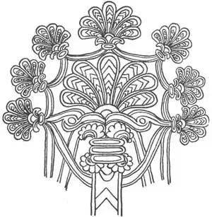

03
PALACE PICTURE PUZZLES
王宫拼图

AN INCH away from Egypt on my map, but a thousand miles away on the ground, was another old country called—well, there were several countries there with hard names. Egypt was a One River Country. These other countries, a thousand miles off to the east, had Two Rivers, so let’s bunch them together and call them, for short, the Two River Country. If you want to know the real names of these countries, they were Mesopotamia, Chaldea, Babylonia, and Assyria.
This part of the world is where the Garden of Eden was supposed to be. The One River Country and the Two River Country are the two oldest countries in the world. We don’t know which is older.
Here in this Two River Country, once, were the largest and most important cities of the ancient world—cities bigger, perhaps, than New York or London—and here ruled mighty but cruel kings. Yet there isn’t a building of these old cities left. The reason for this is that the buildings weren’t built of stone as the buildings of Egypt were, for there was very little stone in the Two River Country. They were built of bricks made of mud, of which there was plenty, but the bricks were only dried in the sun, not baked by fire as the Egyptian bricks were. You know how mud pies dried in the sun soon crumble to pieces. Well, these buildings made of sun-dried bricks have all crumbled away and where once were magnificent cities, there are now only mounds of brick dust which look like natural hills.
You may wonder why the people of these countries didn’t bake their bricks in fire, for fire-baked bricks last longer than almost anything else. The reason is that they didn’t have much wood or much other fuel to make fire with. On some bricks, however, they painted pictures and decorations and these they covered with a glass-like substance (glaze, we call it), then baked them in the fire so that they became colored tiles. These tiles have lasted and have been found by men digging down in the mounds which once were cities of brick buildings.
In Egypt, as I told you, the artists painted pictures chiefly for the dead to see. In the Two River Country artists didn’t care about the dead people. They painted pictures for live people to see.
The kings didn’t build tombs. They weren’t interested in what was to become of them after they were dead. Instead, they built great palaces for themselves and great temples for their gods. These palaces and temples were built of brick, but a mud palace or temple was not very beautiful, so the artists covered the walls with pictures made on slabs of alabaster and with tiles.
Alabaster is a stone, usually white, so soft that it can be cut easily. So the artists cut pictures on slabs of alabaster and painted them in much the same way as the Egyptians painted their pictures.
Each tile had on it a different part of a picture, and then a great many tiles were put together to form a large picture, as picture puzzles are put together from separate pieces. There is a kind of picture, which you may not have seen, that is made of many tiny pieces of different colored stones. A picture made of colored stones is called a mosaic, and these people who lived in the Two River Country were the first to use a kind of mosaic work.
The Egyptian pictures on the inside walls of the tombs or temples are still there, but those on the mummy cases have been put in museums. The alabaster and tile pictures of the Two River people were dug up from under the mounds that once were buildings and they too have been put in museums.
These alabaster and tile pictures made in the Two River Country told stories about the king and his courtiers doing something. The two chief things the king and his courtiers liked to do, and did, was to hunt wild animals and to fight battles, so there were many pictures of battles and hunting parties.
The pictures found in the Two River Country are like the Egyptian pictures in some ways. As in Egypt, the eye is a front eye in a side face, but the shoulders are drawn side view. When an artist wished to show men back of those in front, he drew the figures above those in front as the Egyptian artists did. But in some of their pictures the Two River artists did try to show the men behind by raising them only a little in the picture and making them smaller, and by partly covering those behind with those in front. This effect, showing distance in a picture, is called perspective.
But the kind of men the Two River artists drew were different from those the Egyptians drew. The Two River artists admired strength and strong men, and they thought all strong men had long hair and beards. So they made the pictures of kings very muscular, with bulging muscles in their arms and legs, and with long hair and long beards every lock of which was carefully curled. The curls were regular corkscrew curls, as if freshly done with a curling iron!
The pictures of animals these people made are much more natural than those the Egyptians drew. The ones they liked best to paint were the lion and the bull, because these animals are so strong.
The Two River people were especially good at making designs and decorations for borders. One was called the rosette. It is a dot with a little wheel-like arrangement around it and we are still using it. Another design they made was called the guilloche—which we pronounce gee-lōsh. We use some of the same designs to-day in tiles for bathroom floors and for the halls of public buildings.

No.3 THE TREE OF LIFE（生命树）
One picture the Two River people made has been copied by the artists of many other countries. This was the picture of a peculiar tree called the Tree of Life. It is a tree like no tree that grows. It has many different kinds of leaves and flowers and fruits all on the same tree at the same time. It is often used in designs on rugs and in embroidery. We don’t know what it meant or why it was called the Tree of Life, so you’ll just have to guess why.
【中文阅读】
从地图上看，距离埃及只有一英寸远，但在实际地面上却相距一千英里的地方还有一个古国，叫——唉，那儿有好几个国家呢，而且名字都很难记。埃及是一个只有一条河流的国家。另外那些国家，都在埃及以东千里以外，却都有两条河，所以我们把它们放在一起简称两河流域。如果你想知道这些国家的真实名称，它们分别是美索不达米亚、迦勒底、巴比伦和亚述。
据说这个流域曾是伊甸园所在地。一河之国（埃及）和两河流域是世界上两个最古老的国家。我们不知道哪个更古老。
两河流域曾有古代最大且最重要的城市——那些城市或许比纽约和伦敦还要大——由强大而残暴的君王统治。然而，这些古老的城市没有一座建筑物保存下来。这些建筑物不像埃及的建筑物是石头的，因为两河流域的石头非常少。它们是用泥砖砌成的，因为两河流域有很多泥土，但是，这些泥砖只在太阳底下晒干，而不像埃及的砖块是用火煅烧的。你知道，太阳晒干的泥块要不多久就会崩裂。所以，那些用晒干的砖块砌成的房屋都坍塌了，曾经宏伟的城市如今只剩下堆堆砖灰，看起来就像一座座天然形成的小土丘。
我们可能会纳闷这些国家的人们为什么不用火烧制砖块，因为煅烧的砖块比几乎任何其他东西都持续长久。原因是他们没有太多的木材或其他的燃料来生火。然而，他们在一些砖块的表面上绘画和装饰，再抹上一种类似于玻璃的物质（我们称之为釉料），最后用火烤制，将它们变成了有色瓷砖。这些瓷砖存留了下来，后来人们在挖掘遗址时在土砖房城市的废墟里发现了这些有色瓷砖。
如我所说，在埃及，画家画画主要是给死人看的。而在两河流域，画家并不关心死者。他们画画供人观赏。
君王们不造坟修墓。他们对自己死后变成什么样子不感兴趣。相反，他们为自己建造庞大的宫殿，为他们的神灵建造宏伟的庙宇。这些宫殿和庙宇用泥砖砌成，因此不太美观，所以画家们就在雪花石膏和瓷砖上画上图画贴在墙上。
雪花石膏是一种石头，通常是白色，很柔软，所以雕刻起来很容易。因此艺术家在雪花石膏上雕刻，再涂上颜色。他们涂色的方式和埃及人的绘画方式差不多。
每块瓷砖上都画有整幅画的某个不同部分，再把许多瓷砖放在一起组成一幅大画，就像把不同的拼图合在一起一样。有一种图画你可能没见过，它由许多不同颜色的小石块构成。这种由有色石块构成的图案称作镶嵌画。而最早使用镶嵌工艺的正是那些生活在两河流域的人。
埃及人画在坟墓和殿宇内墙壁上的图画仍然保留在那里，而那些画在木乃伊箱子上的画却已被博物馆收藏了。两河流域人在雪花石膏和瓷砖上作的画已从建筑物的废墟中被挖掘出来，也放进了博物馆。
两河流域人在雪花石膏和瓷砖上作的画讲述了国王及其侍臣们的所作所为。主要有两件事是国王和侍臣们做了还喜欢再做的，那就是狩猎和打战，所以就有了许多关于争战和狩猎场景的绘画。
在两河流域发现的图画和埃及的图画也有某些相似之处。像埃及人一样，两河流域人也是在侧脸上画上正视的眼睛，却把肩膀画成侧向。在画后面的人时，他们也像埃及人那样把后面的人画在前面人的上方。但是，在两河流域艺术家的一些画中，他们也的确试图通过把后面人抬高一点并缩小一些，或让前面人稍微挡住后面人一点来画出他们。这种表现远近效果的画法叫做透视法。
但是两河流域艺术家画的人物跟埃及艺术家画的人物又有所不同。两河流域艺术 家崇尚力量，敬佩强壮的人。他们认为所有强壮的人都有长长的头发和胡须，所以就把国王画得很强壮，手臂和大腿上的肌肉发达，留长发，养胡须，而且缕缕都是精心卷曲的。这些卷儿都呈常见的螺旋卷，就像被烫发钳刚卷过的一样！
这里人画的动物比埃及人画的要生动得多。他们最喜欢画的是狮子和公牛，因为这些动物都很强壮。
两河流域人特别擅长图案设计和边框装饰。有一种叫做圆花饰，中间有个小圆点，一些轮状的图案环绕周边。我们至今仍在使用这种图案。他们设计的另一种图案叫做纽索饰。今天我们在浴室和公共建筑大厅里使用的瓷砖仍采用了某些类似的图案设计。
两河流域人有幅画已被许多其他国家的画家临摹过。画面是颗很奇特的树，称作生命树。它和自然生长的树不一样，它同时长满不同种类的叶子、花朵和果实。通常在地毯和刺绣的图案上见到这种设计。它的含意是什么，为什么叫生命树，我们都不知道，所以你就得自己猜一猜啦。